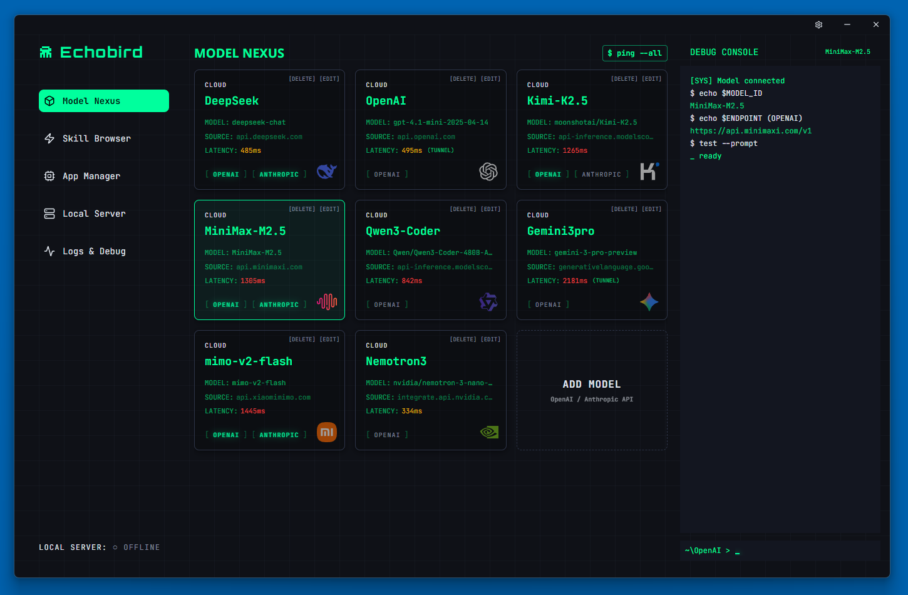
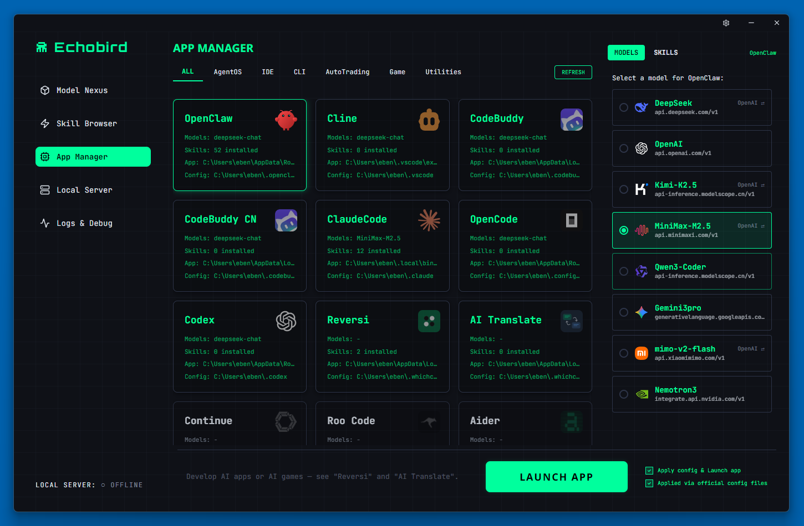
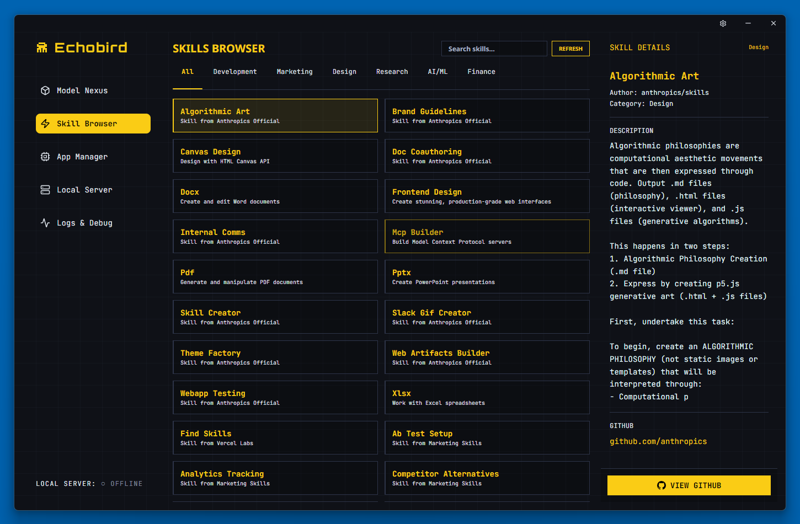

FEATURES
Switch models.
Not config files.
Echobird is a visual control panel for all your AI coding tools. Point, click, switch.
One-Click Model Switching
Visually configure AI models for any supported tool. No more digging through JSON files or editing configs by hand.
Dual Protocol
OpenAI & Anthropic API. Switch anytime.
Smart Tunnel Proxy
Access geo-restricted APIs. No full VPN needed.
Skill Browser
Discover and install AI skills across tools.
Built-in AI Apps
Reversi, AI Translate. More coming.
28 Languages
Full i18n for global developers.
SCREENSHOTS
See it in action.
Model Nexus · Manage all AI models in one place

App Manager · One-click model switching for all tools

Local Server · Run open-source models locally

Skill Browser · Discover and install AI skills

DOWNLOAD
Get started in seconds.
Download Echobird for your platform. Free, open source, MIT licensed.
# Linux quick start
$ chmod +x Echobird-*.AppImage
$ ./Echobird-*.AppImage
# Need FUSE?
$ sudo apt install libfuse2
WORKS WITH
Your favorite tools.
Manage AI models across all your coding tools.
OpenClaw
OpenAI
Anthropic
Claude Code
Anthropic
Cline
OpenAI
Continue
OpenAI
OpenCode
OpenAI
Codex
OpenAI
Roo Code
OpenAI
ZeroClaw
OpenAI
Aider
OpenAI
Anthropic